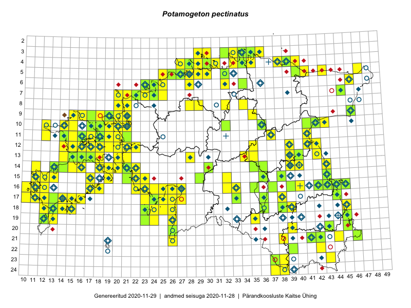

Potamogeton pectinatus
Uuendatud: 2016-12-08
Kaardile koondatud taksonid: Potamogeton pectinatus L.

Kaart põhineb 41 kirjel, neist vaatlusi 40 ja eksemplare 1. Taksonit on leitud 38 ruudust.
| Ruut | Vaatleja(d) | Vaatlusaeg | Kirje tüüp | Viide andmebaasikirjele |
|---|---|---|---|---|
| 10-17 | Toomas Kukk, Eerik Leibak | 2015-08-12 | ruut/ala | vaata PlutoFis |
| 09-15 | Toomas Kukk, Eerik Leibak | 2015-08-11 | ruut/ala | vaata PlutoFis |
| 20-45 | Katrit Karus, Tõnu Feldmann | 2015-07-27 | ruut/ala | vaata PlutoFis |
| 16-32 | Tõnu Feldmann, Katrit Karus | 2015-07-31 | ruut/ala | vaata PlutoFis |
| 15-32 | Katrit Karus, Tõnu Feldmann | 2015-07-31 | ruut/ala | vaata PlutoFis |
| 13-35 | Katrit Karus, Tõnu Feldmann | 2015-08-05 | ruut/ala | vaata PlutoFis |
| 13-34 | Katrit Karus, Tõnu Feldmann | 2015-08-03 | ruut/ala | vaata PlutoFis |
| 06-32 | Katrit Karus, Tõnu Feldmann | 2015-08-04 | ruut/ala | vaata PlutoFis |
| 15-23 | Indrek Tammekänd, Irja Tammekänd | 2015-08-02 | ruut/ala | vaata PlutoFis |
| 19-13 | Oliver Parrest | 2015-07-01 | ruut/ala | vaata PlutoFis |
| 24-37 | Eeva-Maria Jeletsky, Tarmo Niitla | 2015-07-16 | ruut/ala | vaata PlutoFis |
| 24-38 | Eeva-Maria Jeletsky, Tarmo Niitla | 2015-07-16 | ruut/ala | vaata PlutoFis |
| 17-12 | Mari Reitalu | 2015-08-11 | ruut/ala | vaata PlutoFis |
| 16-10 | Mari Reitalu, Oliver Parrest | 2015-08-04 | ruut/ala | vaata PlutoFis |
| 16-12 | Mari Reitalu, Triin Reitalu | 2015-08-18 | ruut/ala | vaata PlutoFis |
| 17-12 | Mari Reitalu, Triin Reitalu | 2015-07-22 | ruut/ala | vaata PlutoFis |
| 16-11 | Triin Reitalu, Mari Reitalu | 2015-08-09 | ruut/ala | vaata PlutoFis |
| 17-11 | Mari Reitalu, Triin Reitalu | 2015-08-05 | ruut/ala | vaata PlutoFis |
| 16-40 | Kadi Palmik, Helle Mäemets | 2015-07-22 | ruut/ala | vaata PlutoFis |
| 16-39 | Kadi Palmik, Helle Mäemets | 2015-07-22 | ruut/ala | vaata PlutoFis |
| 16-39 | Kadi Palmik, Helle Mäemets | 2015-07-22 | ruut/ala | vaata PlutoFis |
| 09-35 | Kadi Palmik, Helle Mäemets | 2015-07-21 | ruut/ala | vaata PlutoFis |
| 10-36 | Kadi Palmik, Helle Mäemets | 2015-07-21 | ruut/ala | vaata PlutoFis |
| 15-36 | Helle Mäemets, Mare Leis | 2015-07-06 | ruut/ala | vaata PlutoFis |
| 03-30 | Mari Reitalu, Tõnu Ploompuu, Ott Luuk, Peedu Saar | 2014-06-01 | ruut/ala | vaata PlutoFis |
| 10-20 | Tõnu Ploompuu, Anna-Grete Rebane, Hanna-Eliisa Luts | 2015-07-20 | ruut/ala | vaata PlutoFis |
| 16-11 | Mari Reitalu, Triin Reitalu | 2015-08-09 | ruut/ala | vaata PlutoFis |
| 11-20 | Hanna-Eliisa Luts, Tõnu Ploompuu | 2015-08-13 | ruut/ala | vaata PlutoFis |
| 09-21 | Kadi-Liis Kesler, Tõnu Ploompuu | 2015-07-14 | ruut/ala | vaata PlutoFis |
| 10-21 | Tõnu Ploompuu | 2015-08-21 | ruut/ala | vaata PlutoFis |
| 15-19 | Mari Reitalu, Triin Reitalu | 2016-06-30 | ruut/ala | vaata PlutoFis |
| 20-26 | Sirje Azarov, Indrek Tammekänd | 2016-07-18 | ruut/ala | vaata PlutoFis |
| 21-26 | Sirje Azarov, Indrek Tammekänd | 2016-07-18 | ruut/ala | vaata PlutoFis |
| 14-19 | Mari Reitalu, Sirje Azarov | 2016-08-18 | ruut/ala | vaata PlutoFis |
| 16-27 | Tiit Hallikma, Tõnu Ploompuu | 2016-06-20 | ruut/ala | vaata PlutoFis |
| 07-25 | Helle Mäemets, Tiina Elvisto | 2016-07-05 | ruut/ala | vaata PlutoFis |
| 17-24 | Tiit Hallikma, Tõnu Ploompuu | 2016-07-06 | ruut/ala | vaata PlutoFis |
| 17-25 | Tiit Hallikma, Tõnu Ploompuu | 2016-07-06 | ruut/ala | vaata PlutoFis |
| 18-12 | Toomas Kukk, Meeli Mesipuu, Mari Reitalu | 2016-10-07 | ruut/ala | vaata PlutoFis |
| 04-39 | Hannes Pehlak, Toomas Kukk, Susanna Vain | 2016-07-28 | ruut/ala | vaata PlutoFis |
| 16-42 | Peedu Saar | 2015-08-21 | eksemplar | vaata PlutoFis |